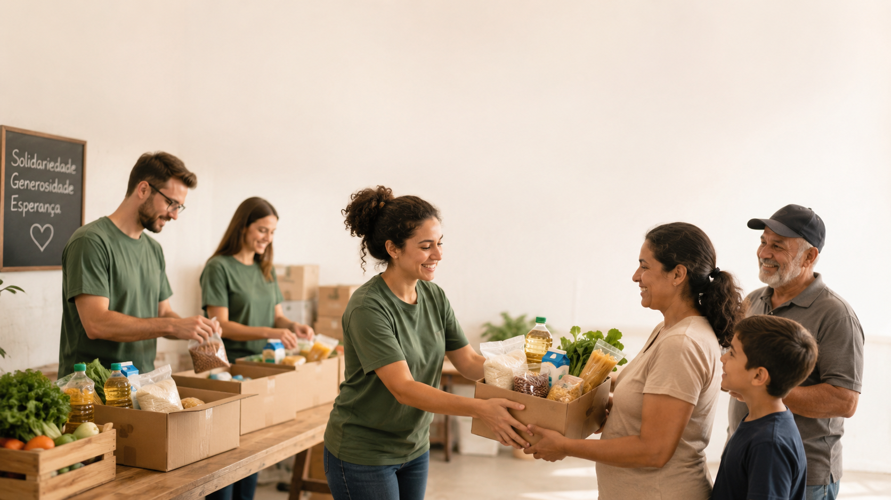
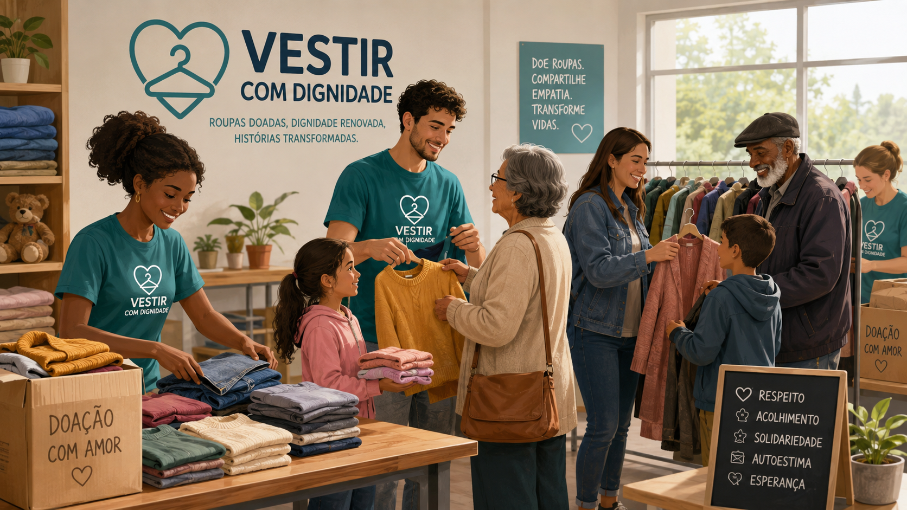
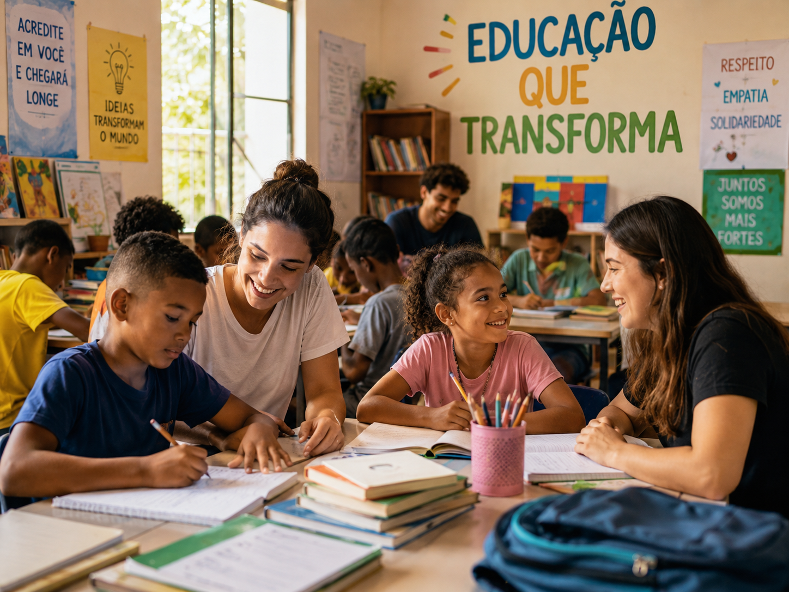
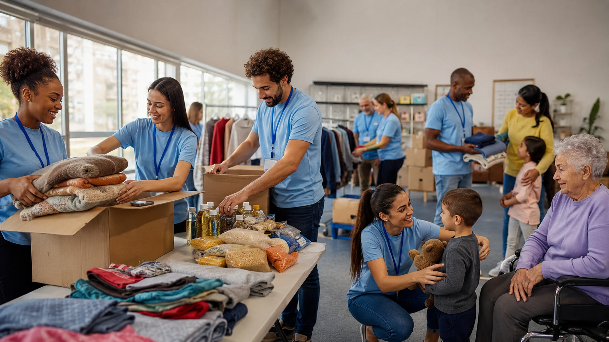

Projetos
Nessa página você verá nossos projetos realizados, são inúmeros projetos ao longo dos anos que se passaram!
Cesta Solidária
Projeto ativo
Objetivo do projeto
Essa iniciativa foi pensada para oferecer o melhor apoio aos necessitados, hoje em dia sabemos que muitas famílias não têm condições de comer bem, pensando nisso criamos o Cesta Solidária.
Público atendido
Destina-se a famílias que passam necessidades básicas
de alimentação e muitas vezes não têm o que comer,
pensando nisso criamos o projeto
Cesta Solidária.
O projeto tem como objetivo ajudar essas famílias
a terem uma alimentação digna.
Como funciona
Esse projeto é realizado duas vezes a cada mês.
Dentro desse período são entregues alimentos
para todos os necessitados.
Pensamos que a realização das entregas duas vezes
ao mês atende melhor às necessidades das famílias.
Como doar
Para fazer doações é muito simples. Temos uma página
onde você pode acessar e fazer seu cadastro como
doador ou como necessitado.
Feito isso, nosso setor responsável fará uma análise
dos dados e retornará pelos meios de contato informados.
Caso não exista um meio de contato disponível,
será possível procurar uma sede da ONG e apresentar
os documentos necessários.
Vestir com Dignidade

Objetivo
O objetivo desse trabalho é melhorar a qualidade de vida e a autoestima das pessoas com pouca condição. Esse trabalho é feito mensalmente e, graças à ajuda de nossos colaboradores, tem se mantido de pé até hoje.
Tipo de doações aceitas
Nesse projeto aceitamos doações de roupas, sapatos e acessórios para adultos, crianças e jovens. Os itens podem ser novos ou usados, de todos os tamanhos, desde que estejam em boas condições. NÃO SÃO ACEITAS ROUPAS ÍNTIMAS.
Como doar
Para nos ajudar com doações é bem simples. Basta entrar na página de cadastro, preencher seus dados e escolher a opção de doar. Nosso time entrará em contato com você para auxiliar nos próximos passos.
Educação que Transforma
Destaque
Objetivo do projeto
Esse projeto foi criado pensando principalmente em crianças e jovens que muitas vezes não têm acesso a uma educação de qualidade ou até mesmo a materiais básicos para estudar. Nosso objetivo é ajudar essas pessoas a terem mais oportunidades e um futuro melhor através da educação.
Público atendido
O projeto atende crianças e adolescentes em situação de vulnerabilidade, principalmente aqueles que enfrentam dificuldades para continuar os estudos por falta de material escolar, apoio ou condições financeiras.
Como funciona
O projeto funciona através de doações de materiais escolares, livros, mochilas e outros itens que ajudam no dia a dia dos estudantes. Também contamos com voluntários que ajudam em reforços escolares, atividades educativas e ações de incentivo aos estudos.
Como ajudar
Para ajudar é possível fazer doações de materiais escolares, livros ou contribuir financeiramente com o projeto. Também é possível participar como voluntário, ajudando em atividades educativas e dando apoio às crianças e jovens atendidos.
Voluntariado

Objetivo
O voluntariado é uma das partes mais importantes da nossa ONG, pois através dele conseguimos realizar grande parte das ações e projetos que ajudam as famílias atendidas.
Como participar
Para participar é necessário fazer um cadastro informando seus dados e a área em que gostaria de ajudar. Depois disso, nossa equipe entra em contato para orientar sobre as atividades disponíveis e os próximos passos.
Atividades realizadas
Os voluntários podem ajudar na organização de alimentos, separação de roupas, montagem de cestas, entrega de doações, apoio em campanhas e também em atividades educativas.
Quem pode participar
Qualquer pessoa que tenha vontade de ajudar e disponibilidade para participar das ações pode se cadastrar como voluntário. Algumas atividades podem ter regras específicas de idade ou responsabilidade, dependendo do tipo de ação.
Importância do voluntariado
Sem a ajuda dos voluntários seria muito mais difícil manter nossos projetos funcionando. Cada pessoa que doa um pouco do seu tempo ajuda diretamente a melhorar a vida de outras pessoas.